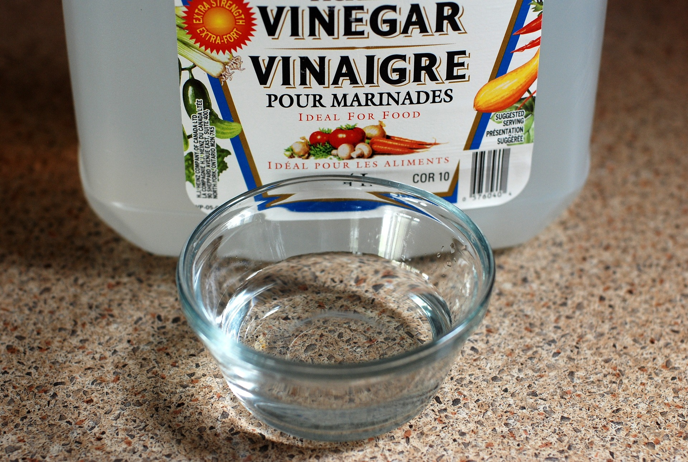

Chemicals are Bad
Chemicals have taken over every aspect of our lives. The truth is that most chemicals in use today are unnecessary. Vinegar is a great substitute for most petroleum-based chemicals in use today. Most chemicals today contain an amalgamation of carcinogens. Pesticides will kill your beneficial bugs like bees and herbicides will kill your crops. This is not to mention that the chemicals being used in your house have a tendency to release toxins into the inside air. Below is a comparative list of chemicals and their often equally effective natural counterparts.
Chemical
- Bleach
- Pesticides
- Herbicides
- Fertilizers
- Degreaser
- Break free/ pb blaster
- Dry Mechanism Lubricant
Alternative
- Vinegar/citrus oils
- Clove/cinnamon/castor oil/cloves
- Pull weeds like you care for your garden
- Compost/ bone and blood meal
- Vinegar diluted with water
- Vinegar citrus in emergency
- Vinegar followed by graphite dust
The Wonders of Vinegar!
Cheaper than most household cleaners, this juggernaut does it all. Coming in at about $5 a gallon when bought in bulk, vinegar will:
- Clean drains
- Sanitize surfaces
- Break down lime and rust
- Kill and prevent mold
- Deter ants and erase their trail.
Since dropping most chemicals, vinegar has done a stellar job at stepping up and taking on almost any job.